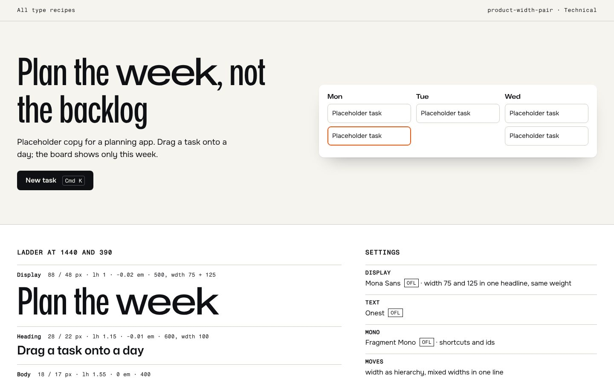
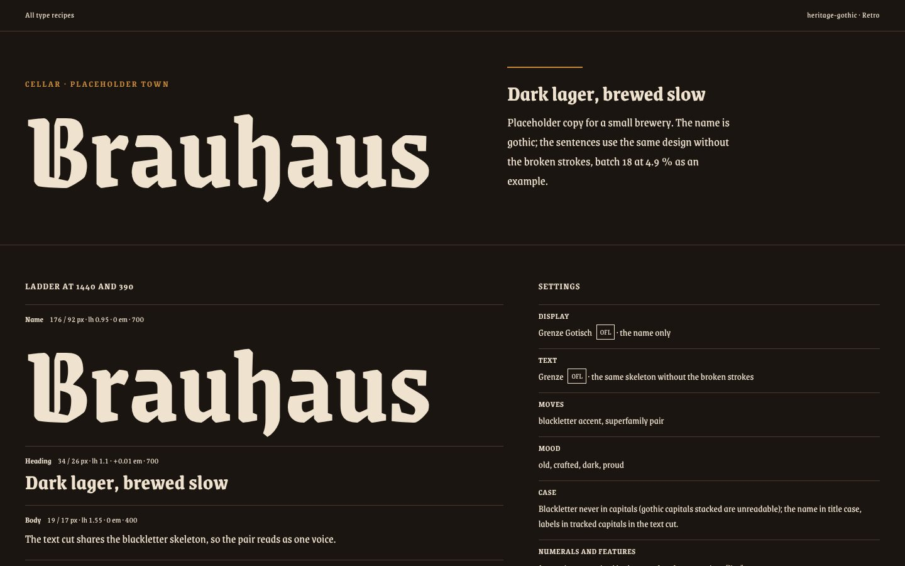
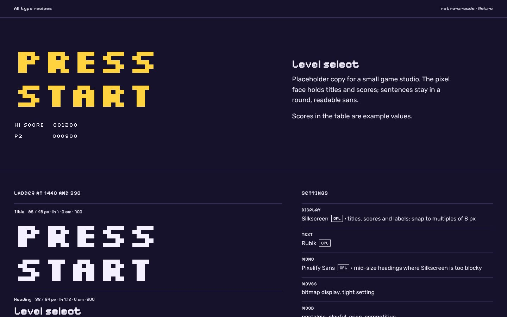
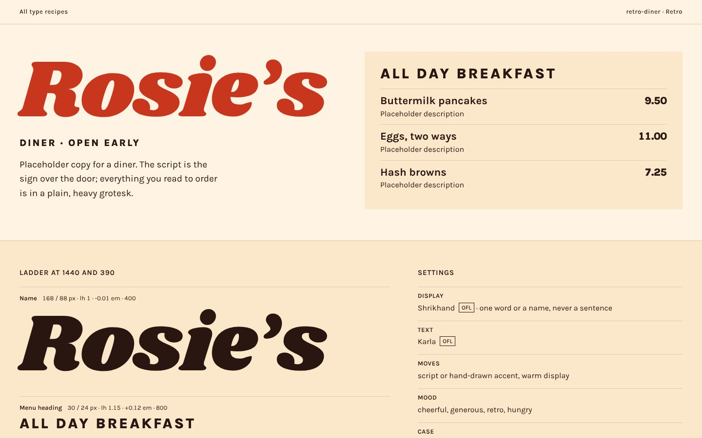
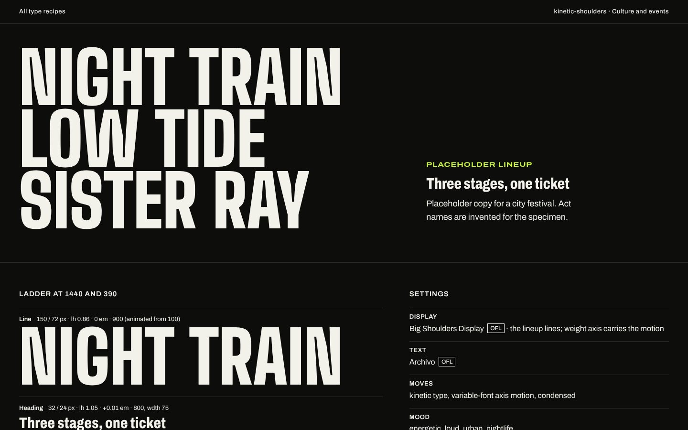
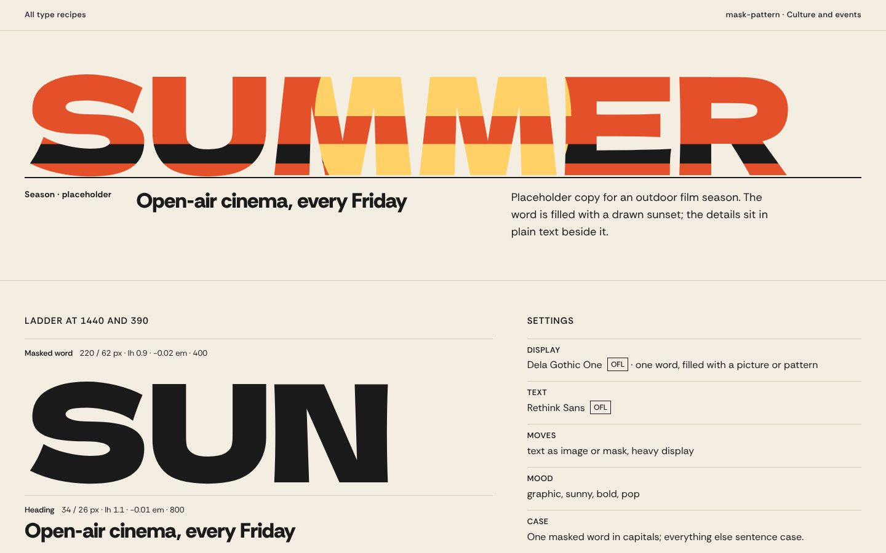
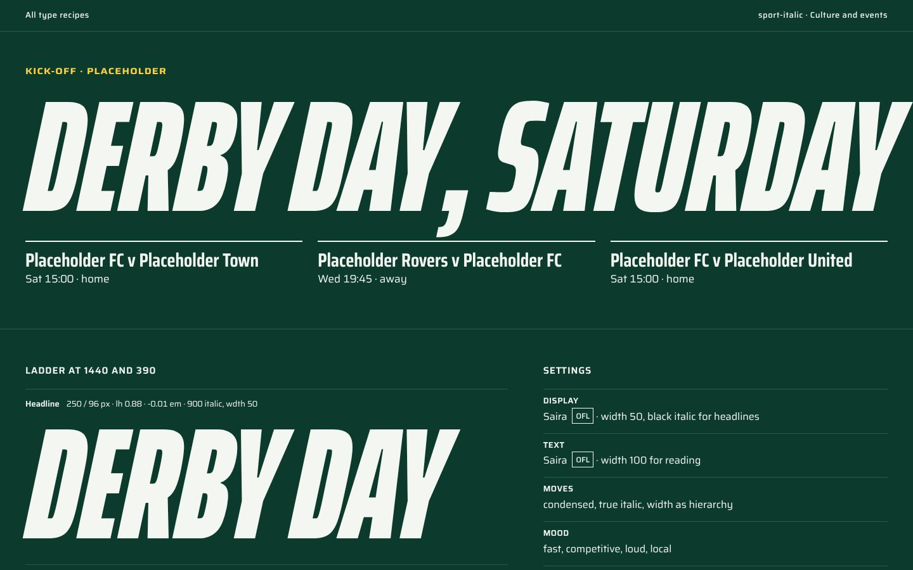
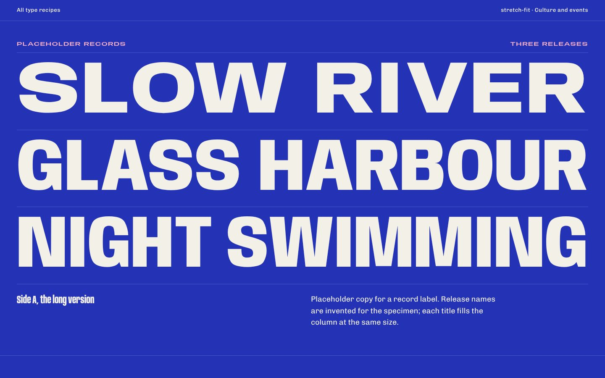

Editorial
Magazines, essays, long reads, publishers.


Technical
Developer tools, research, infrastructure.
-

Two widths, one line Mona Sans + Onest + Fragment Mono product-width-pair · width as hierarchy, mixed widths in one line -
 Console, tight
Red Hat Text + Red Hat Text + Red Hat Mono
technical-console · mono-led, tight setting
Console, tight
Red Hat Text + Red Hat Text + Red Hat Mono
technical-console · mono-led, tight setting
-
 Field notes, mono-led
Martian Mono + Hanken Grotesk
technical-field-notes · mono-led, width as hierarchy, type-only hero, no giant size
Field notes, mono-led
Martian Mono + Hanken Grotesk
technical-field-notes · mono-led, width as hierarchy, type-only hero, no giant size
Data-dense
Dashboards, tables, operations screens.
Finance
Money, invoices, banking, ledgers.
Civic and institutional
Public services, museums, universities, archives.


Health
Clinics, care, wellbeing, medical forms.
Children
Reading, learning and play for young users.
Playful
Toys, games, consumer apps with a grin.


Luxury
Fashion, jewellery, hotels, fragrance.


Warm craft
Bakeries, makers, small producers, food.
Retro
Arcade, diner, heritage and revival.
-

Gothic heritage Grenze Gotisch + Grenze heritage-gothic · blackletter accent, superfamily pair -

Arcade pixel Silkscreen + Rubik + Pixelify Sans retro-arcade · bitmap display, tight setting -

Diner script, one word Shrikhand + Karla retro-diner · script or hand-drawn accent, warm display
Brutalist and zine
Raw structure, punk, protest, artist sites.
Culture and events
Music, festivals, sport, posters, social.
-

Kinetic shoulders Big Shoulders Display + Archivo kinetic-shoulders · kinetic type, variable-font axis motion, condensed -

Letters as windows Dela Gothic One + Rethink Sans mask-pattern · text as image or mask, heavy display -

Matchday italic Saira + Saira sport-italic · condensed, true italic, width as hierarchy -

Fitted by width Anybody + Chivo stretch-fit · variable-font axis motion, width as hierarchy
Calm and quiet
Meditation, poetry, slow brands, systems that whisper.